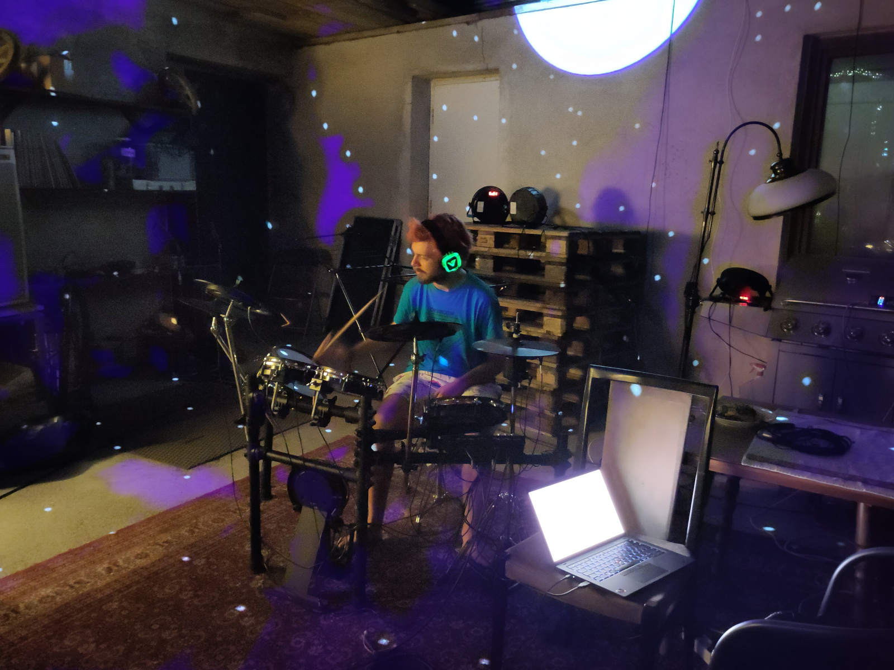

WOT for every thing
by Christian 'Jaller' Paul

node-wot
- Define the server
- Define the things
- Let the server expose the things


- Define the server
- Start the server
- Define the things on demand
/osm/opening-hours/way/37111640
- Fetch element on OpenStreetMap
- Resolve address to a timezone
- Fetch the local holiday days
- Parse the opening_hours string
- Set timeouts for when the place opens / closes
🌌 WoT Anything

/youbikes/501202040
WoT Anything matches the API operations
- getDescription
- getProperty
- getPropertyEventEmitter
- getMultipleProperties
- getAllProperties

/art-net/1
/art-net/1-19-10

/art-net/1-19-mh-x30-led-beam-10
🌌 WoT Wrench
Available features
- HTTP
- Server-Sent-Events (SSE)
- Websockets
- Getting, setting and observing Properties
- Invoking synchronous Actions
- Basic types
- Nullable Properties
- Base64-encoded media
Feature wishlist
- Optimistic UI
- Observing Events
- Async Actions
- Input selector
- uriVariables
- Languages
- Thing Models
- JSON-LD
- Tests for everything
- Documentation for everything
- Security mechanisms
How to support me?
- Provide mentorship for self-employment
- Hire me to work on these projects
- Help with the UX design
- Send me your things (TDs, URLs)
- Talk to me online or at WoT Week
Thank you for your attention!

chrpaul.de/about